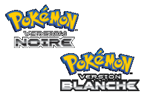

Pokémon version noire (ポケットモンスターブラック, Poketto Monsutā Burakku?) et Pokémon version blanche (ポケットモンスターホワイト, Poketto Monsutā Howaito?), couramment appelés Pokémon Noir et Pokémon Blanc, sont deux éditions du jeu vidéo de rôle de la série Pokémon développé par Game Freak. Elles sont éditées par The Pokémon Company et Nintendo sur la console portable Nintendo DS au Japon en 2010, en Europe et en Amérique du Nord en 2011. Tout comme les quatre générations auparavant, le joueur contrôle le jeune protagoniste via une vue aérienne et le dirige dans l'ensemble de la région fictive d'Unys. Son but est de capturer, d'entraîner et de faire combattre des créatures fictives appelées « Pokémon » afin d'obtenir le titre de « Maître Pokémon ». Il doit également déjouer les plans de l'organisation criminelle, appelée Team Plasma. L'objectif ultime est de compléter le Pokédex par l'obtention des 156 nouveaux Pokémon de la région. Contrairement aux jeux précédents, aucun Pokémon des générations antérieures n'est disponible, jusqu'à l'obtention du « Pokédex National ». Les versions noire et blanche sont quasiment identiques, avec approximativement la même histoire, seuls certains Pokémon sont exclusifs à une cartouche. Les jeux reçurent de bonnes critiques. Ils se vendirent très rapidement, battant le record du nombre de ventes lors des deux premiers jours.
L'histoire prend place dans la région fictive d'Unys, inspirée sur la ville de New York aux États-Unis1. Elle comporte un total de dix villes reliées entre elles par des routes. Certaines zones ne sont accessibles que quand le joueur apprend une capacité spéciale à son Pokémon. En fonction du sexe choisi, le protagoniste de Pokémon Version noire et Blanche est soit un jeune garçon appelé Ludwig, soit une jeune fille du nom de Ludvina, vivant à Renouet. Le protagoniste reçoit dans sa chambre avec ses amis d'enfance Bianca et Tcheren de la part du professeur Keteleeria, un paquet cadeau contenant trois « Pokémon de départ ». Le joueur peut choisir parmi Vipélierre, Gruikui et Moustillon (Snivy, Tepig et OshawottN ). Les deux partenaires, et non plus un rival4, du joueur choisissent les Pokémon restant. Après avoir décidé de leur Pokémon, les deux partenaires décident de défier le joueur l'un après l'autre ; ils continueront à le défier et à l'aider tout au long de l'aventure. Le joueur entame alors une quête à travers Unys, capturant les Pokémon sauvages, les entraînant et combattant avec ceux des autres dresseurs Pokémon, avec pour but d'obtenir le titre de « Maître Pokémon ». Pour cela, il rencontrera dans certaines villes des établissements spéciaux appelées « arènes », à l'intérieur desquelles demeure un champion que le joueur devra battre dans un combat Pokémon pour obtenir un badge. Une fois les huit badges acquis, le joueur sera autorisé à combattre la Ligue Pokémon, qui se compose des meilleurs dresseurs de Pokémon de la région. Tout au long de l'aventure, le joueur devra déjouer les plans de la Team Plasma, une organisation secrète militant pour la libération des Pokémon envers leur dresseur. La quête principale se termine avec la chute de N, manipulé par son père adoptif, Ghetis, qui lui, souhaitait dominer le monde.